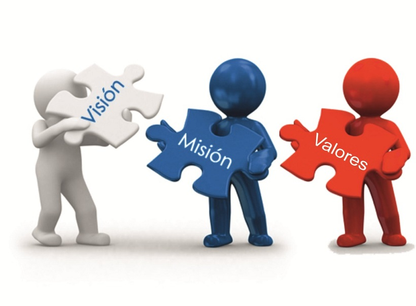

Conoce mas sobre nosotros:
Mision:Ser la empresa que colabora con el crecimiento del pais, colocando al mejor talento, en las mejores empresas. Colaborando a ser un mejor pais, ofreciendo a las empresas la confianza de brindarnos sus procesos para que los altos rangos puedan enfocarse en las estrategias de la empresa. Ser ese aliado estrategico que se preocupa por el desarrollo y bienestar de sus clientes.
Vision:
Ayudar a las empresas con el desarrollo de su gente, actualizando a los colaboradores con las tendencias mas actuales en cada uno de sus departamentos, luchando por los objetivos de las empresas para lograr el desarrollo y cumplimiento de objetivos no solo en Guatemala si no a nivel regional.Valores:
ProfesionalismoLiderazgo
Actitud de Servicio
CompromisoPerseverancia
Etica
Lealtad
Excelencia
 Creada el 20 de agosto de 2022